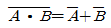
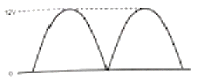
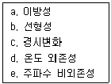

의공기사 (2021-09-12 기출문제)
1과목: 기초의학 및 의공학
1. 심장에서 정상적인 심박조율 기능을 하는 부위는?
- 푸르키니에 섬유
- 히스번들
- 방실결절
- 동방결절
(정답률: 72%)

2. 인체를 수직으로 나누어 좌우로 구분하는 인체의 단면을 무엇이라 하는가?
- 전두면
- 시상면
- 가로면
- 횡단면
(정답률: 71%)
3. 다음 중 압전센서가 사용되는 장치가 아닌 것은?
- 심전도계
- 초음파 영상장치
- 혈압 측정 장치
- 심음도 측정장치
(정답률: 48%)
4. 다음 중 동잡음이 가장 크게 발생하는 전극은?
- 부유 전극
- 금속판 전극
- 가요성 전극
- 이식형 전극
(정답률: 67%)
5. 인체 피부에 삽입하는 바늘형 전극의 설명 중 틀린 것은?
- 안전을 위해 단극성 전극만 사용한다.
- 바늘 끝부분을 제외한 나머지 부분은 절연되어 있다.
- 바늘형 전극의 대표적 용도로 근전도 측정이 있다.
- 피부를 통해 꽂아서 피하의 특정 부위에서 전위를 측정하는 용도로 사용한다.
(정답률: 71%)
6. 호흡을 조절하는 호흡중추가 위치하는 부위는?
- 대뇌
- 소뇌
- 연수
- 척수
(정답률: 69%)
7. 귀금속(noble metal)전극에 대한 설명으로 틀린 것은?
- 수명이 짧다.
- 용량성(capacitive) 특성을 보인다.
- 장기간 사용이 가능하다.
- 동잡음(motion artifact)이 크다.
(정답률: 63%)
8. 용량성 센서의 특징으로 가장 옳은 것은?
- 변위를 측정할 수 있다.
- 집합 반도체로 구성된다.
- 물리적 압력에 따른 전압을 발생한다.
- 자기에너지 형태로 에너지를 저장한다.
(정답률: 78%)
9. 열전쌍(열전대)의 장점이 아닌 것은?
- 열용량이 작다.
- 접점이 크다.
- 응답시간이 빠르다.
- 안정성이 높다.
(정답률: 50%)
10. 전극을 사용하여 보다 정확한 생체전기신호를 얻기 위한 방법으로 틀린 것은?
- 표피 각질층을 벗긴다.
- 피부 표면을 건조하게 한다.
- 전극 리드선의 움직임이 줄어들도록 잘 고정한다.
- 염화이온을 이용한 겔 형태의 전해질 크림을 사용하여 접촉상태를 좋게 한다.
(정답률: 84%)
11. 용량성 센서에서 축전기의 정전용량을 변화시키는 방법이 아닌 것은?
- 평행판에 전압을 가한다.
- 평행판 사이에 유전체를 삽입한다.
- 두 평행판 사이의 간격을 변화시킨다.
- 두 판이 마주하고 겹치는 면적을 변화시킨다.
(정답률: 63%)
12. 윤활관절의 종류로 틀린 것은?
- 중쇠관절
- 섬유관절
- 경첩관절
- 절구관절
(정답률: 66%)
13. 세포자극이 역치에 도달하면 탈분극이 일어난다. 그러나 역치에 도달하지 않으면 오랜 자극을 주어도 탈분극이 일어나지 않는데 이러한 현상은 무엇인가?
- 평형성
- 실무율
- 자극전위
- 역치전위
(정답률: 63%)
14. 동맥과 정맥에 대한 설명으로 옳은 것은?
- 정맥에는 판막이 있다.
- 정맥의 벽은 동맥과 마찬가지로 단일층으로 되어 있다.
- 정맥은 동맥에 비해서 두꺼운 혈관벽을 가지고 있다.
- 중간 크기의 정맥이나 대정맥에는 외막 속에 혈관 자체에 영양을 공급하는 자양혈관이 있다.
(정답률: 77%)
15. 의용생체센서에서 필요한 특성이 아닌 것은?
- 감도
- 왜곡도
- 안정도
- 선택도
(정답률: 76%)
16. 온도센서 중 서미서터의 특징이 아닌 것은?
- 소형으로 제작이 가능하다.
- 응답속도가 빠르고 감도가 높다.
- 짧은 시간 체온 측정 시 적합하다.
- 생체 내 온도나 국부 온도 측정이 가능하다.
(정답률: 47%)
17. 화학적 시냅스에 대한 설명 중 틀린 것은?
- 신경 전달 물질을 통해 신호를 전달한다.
- 대부분의 신경계에 있는 시냅스의 종류이다.
- 시냅스 간극을 이동한 신경전달물질은 시냅스 후 세포막에 존재하는 수용체 분자에 결합한다.
- 간극 결합(gap junction)을 통하여 한 세포에서 다른 세포로 전기 신호를 직접 전달한다.
(정답률: 64%)
18. 광센서의 광원으로 휴대를 요하는 경우 LED가 유용한 이유로 틀린 것은?
- 소형
- 저렴한 가격
- 큰 전원으로 작동
- 다양한 빛을 선택
(정답률: 88%)
19. 전극의 종류 중 사용 부위에 따른 분류가 아닌 것은?
- 습윤 전극
- 이식형 전극
- 표면 전극
- 바늘용 전극
(정답률: 64%)
20. 심장의 활동전위의 전도계에 해당되지 않는 것은?
- 동방결절(sinoatrial node)
- 방실결절(atrioventricular node)
- 심실중격(interventricular septum)
- 히스속(bundle of His)
(정답률: 76%)
2과목: 의용전자공학
21. 생체신호의 특성과 관계가 없는 것은?
- 신호의 크기가 매우 작다.
- 사람에 따라 개인차가 크다.
- 주변 환경에 의한 잡음 발생이 쉽다.
- 항상 반복적이고 주기적인 특성을 가진다.
(정답률: 78%)
22. 다음 중 플립플롭(flip-flop)을 응용해서 구현하기 가장 어려운 것은?
- 카운터
- SRAM
- 멀티플렉서
- 레지스터
(정답률: 50%)
23. 하나의 입력 회선을 여러 개의 출력 회선에 연결하여, 선택 신호에서 지정하는 하나의 회선에 출력을 하는 기능을 수행하는 것은?
- 인코더
- 가산기
- 멀티플렉서
- 디멀티플렉서
(정답률: 42%)
24. 아날로그 신호를 디지털 신호로 변환할 때 발생하는 양자화 오차에 대한 설명으로 틀린 것은?
- 디지털화에 따르는 품질저하의 원인이 된다.
- 계단 형태의 신호를 저역 통과 필터에 적용할 때 발생한다.
- 연속되는 양을 이산값으로 근사화 시킬 때 원신호화의 차이로 발생하는 오차를 말한다.
- 양자화 잡음을 줄이기 위해 양자화 폭을 일정하게 고정하는 선형 양자화 방법이 있다.
(정답률: 62%)
25. FM방식과 AM방식의 비교 설명 중 FM방식의 내용으로 틀린 것은?
- 소비전력이 적다.
- 회로가 복잡하다.
- 과변조 시 충실도가 높다.
- 상하측파대 위상반전이 없다.
(정답률: 47%)
26. 일반적으로 인코더(encoder) 회로 구성 시 사용되는 게이트의 집합은?
- NOT 게이트
- AND 게이트
- OR 게이트
- NAND 게이트
(정답률: 53%)
27. 자기력선의 특성으로 틀린 것은?
- 자기력선은 서로 교차하지 않는다.
- 자극 부분에서 자기력선 밀도가 가장 작다.
- 자기력선은 N극에서 나와서 S극으로 향한다.
- 자기력선은 자극이 없는 곳에서는 발생, 소멸이 없다.
(정답률: 66%)
28. 자유공간 상에서 변위전류에 의해 생성되는 것은?
- 전계
- 자계
- 인덕턴스
- 커패시턴스
(정답률: 55%)
29. 다음의 저항 연결에 관한 설명 중 틀린 것은?
- 두 개의 저항이 직렬 연결된 회로에서는 저항이 큰 쪽의 전압강하가 더 크다.
- 두 개의 저항이 병렬 연결된 회로에서는 저항이 큰 쪽에서 흐르는 전류가 더 크다.
- 전류계와 저항을 병렬 연결하면 전류계의 측정점위가 확대된다.
- 전압계와 저항을 직렬 접속하면 전압계의 측정범위가 확대된다.
(정답률: 74%)
30. 연산증폭기에 부궤환(negative feedback)을 사용하는 장점으로 틀린 것은?
- 전압이득을 조절할 수 있다.
- 입력과 출력입출력임피던스를 제어할 수 있다.
- 대역폭(Bandwidth)을 제어할 수 있다.
- 개방루프 이득을 매우 크게 할 수 있다.
(정답률: 59%)
31. 다음 논리회로 법칙 중 법칙의 명칭과 식의 연결이 틀린 것은?
- 교환법칙: A+B=B+A
- 흡수법칙: A+AㆍB=A
- 드모르간 법칙:

- 결합법칙: Aㆍ(B+C)=AㆍB+AㆍC
(정답률: 59%)
32. 정류기 출력전압에 포함된 AC 성분을 DC로 만들어 주는 회로는?
- 증폭회로
- 평활회로
- 발진회로
- 정전류회로
(정답률: 64%)
33. 정현파 신호의 입력에 대하여 반주기 이하의 출력을 얻는 방식으로 효율은 가장 좋지만, 출력파형이 심하게 일그러지는 현상으로 인해 주로 고주파 동조 증폭기에 사용하는 증폭기는?
- A급 증폭기
- B급 증폭기
- AB급 증폭기
- C급 증폭기
(정답률: 64%)
34. 생체 계측을 위한 시스템의 기본 구성 요소가 아닌 것은?
- 센서
- 측정대상
- 압력
- 출력장치
(정답률: 69%)
35. 심전도 측정 시 주의사항이 아닌 것은?
- 교류장애를 피한다.
- 근전도의 혼입을 방지한다.
- 기저선의 호흡성 변동을 방지한다.
- 심전도의 기저선이 상하로 심하게 흔들려도 상관없다.
(정답률: 85%)
36. 3분 동안에 720J의 일을 하였을 때 소비전력은 몇 W 인가?
- 4
- 8
- 10
- 12
(정답률: 83%)
37. 호흡기의 기능평가법 중 폐포 내 공기와 폐모세혈관 내 혈액 간에 O2, CO2를 교환하는 평가기능을 무엇이라 하는가?
- 환기능
- 분포능
- 확산능
- 접합능
(정답률: 60%)
38. 다음 전파 정류된 전압의 평균값은?

- 3.82V
- 6V
- 7.64V
- 12V
(정답률: 57%)
39. 생체계측 신호처리 장치와 설명이 틀린 것은?
- 비교기: 입력전압과 기준전압을 비교하는 회로
- 버퍼: 변환기 출력신호를 계측기로 손실없이 전달하는 회로
- 정류기: 출력전압을 디지털 변환 레벨과 같이 정해진 값으로 고정하는 회로
- 계측증폭기: 증폭기의 입력 임피던스를 높이기 위해 3개의 연산증폭기로 구성된 증폭기
(정답률: 42%)
40. 일반적으로 생체신호계측기의 설계 시 고려하여야 할 요소가 아닌 것은?
- 신호적 요소
- 환경적 요소
- 의학적 요소
- 정신적 요소
(정답률: 81%)
3과목: 의료안전·법규 및 정보
41. 의료기기의 인증마크 중 식품ㆍ약품ㆍ화장품ㆍ의료기기 등의 품질과 기능을 엄격히 평가해 기준을 통과한 제품에 부여하는 인증은?
- CD
- ISO
- HD
- GH
(정답률: 60%)
42. 병원에서 의료정보시스템 구축 시 서버의 용량을 결정하기 위하여 고래해야 할 사항이 아닌 것은?
- 병상수
- 외래 환자수
- 환자 집중도
- 의료기기의 호환성
(정답률: 61%)
43. 의료기기 법령에 명시된 의료기기 판매업 또는 임대업 신고를 하여야 하는 자는?
- 의료기기 판매 또는 임대를 업으로 하고자 하는 경우
- 약국 개설자나 의약품 도매상이 의료기기를 판매하거나 임대하는 경우
- 의료기기의 제조업자나 수입업자가 그 제조하거나 수입한 의료기기를 의료기기취급자에게 판매하거나 임대하는 경우
- 총리령으로 정하는 임신조절용 의료기기 및 의료기관 외의 장소에서 사용되는 자가진단용 의료기기를 판매하는 경우
(정답률: 69%)
44. 의료기기법에 따른 의료기기 동급분류 기준에서 고도의 위해성을 가진 의료기기의 등급은?
- 1등급
- 2등급
- 3등급
- 4등급
(정답률: 77%)
45. 의료기기법상의 의료기기 취급자가 아닌 사람은?
- 의료기관 개설자
- 동물병원 개설자
- 의료기기 제조업자
- 의료기기 감시원
(정답률: 68%)
46. 물리적인 상처 및 고정이 우연히 느슨해지는 것에 대한 허용할 수 없는 위험이 없도록 설계 및 제조해야 하는 의료기기의 형태는?
- 휴대형 ME기기
- 이동형 ME기기
- 손으로 잡는 ME기기
- 환자를 지지하기 위한 ME기기
(정답률: 82%)
47. 원격의료의 응용분야와 거리가 먼 것은?
- 환자의 복리후생 증대
- 응급환자 초기평가와 진단
- 거동이 불편한 환자의 재택진료
- 전문의가 없는 지역 환자에 대한 진료
(정답률: 75%)
48. 전기쇼크 방지 방법에 대한 내용으로 틀린 것은?
- 의료용 접지방식을 준수하여 전기쇼크를 방지한다.
- 장치설계 시 전기쇼크 안전을 고려하고 사용 절차 중 전기쇼크 방지에 주의한다.
- 환자를 모든 접지된 물체나 모든 전류원으로부터 분리 및 절연시킨다.
- 환자가 닿을 수 있는 모든 전도체를 같은 전위(통전위) 상태로 유지하는 것이므로 반드시 접지 전위로 만들어야 한다.
(정답률: 49%)
49. 의료기기의 전기ㆍ기계적 안전에 관한 공통기준 및 시험방법에서 권선결연물을 포함한 절연재료에 따른 최대온도의 연결이 틀린 것은?
- A종 절연재료 : 1⑤℃
- E종 절연재료 : 120℃
- B종 절연재료 : 130℃
- H종 절연재료 : 155℃
(정답률: 40%)
50. 의료기기 전기ㆍ기계적 안전에 관한 공통기준 및 시험방법에서 정상 상태에서 환자환경내 의료기기 시스템의 부분틀 또는 부분틀 사이에서의 접촉전류는 몇 μA 이하이어야 하는가?
- 10
- 50
- 100
- 500
(정답률: 60%)
51. 의료정보학의 목표가 아닌 것은?
- 환자의 수술 및 치료 정보의 공개
- 병원 사무 관리에 컴퓨터를 활용하는 방안 강구
- 컴퓨터의 조작방법 및 각종 소프트웨어의 사용법 습득
- 전산화된 데이터베이스로부터 정보를 검색하고 관리할 수 있는 능력 배양
(정답률: 67%)
52. 의료기기법에 명시된 의료기기위원회에서 향하는 사항이 아닌 것은?
- 의료기기의 기준규격에 관한 사항
- 의료기기 사용법 및 수리에 관한 사항
- 추적관리대상 의료기기에 관한 사항
- 의료기기의 등급 분류 및 지정에 관한 사항
(정답률: 70%)
53. 마이크로 쇼크에 대한 내용으로 틀린 것은?
- 마이크로 쇼크는 0.1mA 이다.
- 심장에 직접 가해지는 매우 낮은 전류에 의한 전기적 충격을 말하는데, 심장의 비정상적 동작인 심장정지(심실세동)를 일으키게 되므로 치명적이다.
- 의료기기의 누설전류는 이 수치의 1/100이상, 즉 100μA 이상을 요구하며 이것을 기초로 안전 기준이 마련되어 있다.
- 심장이 심실세동을 일으켜 정지한 경우에는 심장에 극히 큰 전류를 순간적으로 인가함에 따라 세동을 제거하여 심박동을 회복하는 것이 가능하다.
(정답률: 50%)
54. 의료폐기물 보관시설의 세부 기준으로 틀린 것은?
- 보관창고, 보관장소 및 냉장시설은 년 1회 이상 약물소독의 방법으로 소독해야 한다.
- 보관창고의 바닥과 안벽은 타일ㆍ콘크리트 등 물에 견디는 성질의 자재로 세척이 쉽게 설치해야 한다.
- 보관창고와 냉장시설은 의료폐기물이 밖에서 보이지 않는 구조로 되어 있어야 하며, 외부인의 출입을 제한하여야 한다.
- 냉장시설은 섭씨 4도 이하의 설비를 갖추어야 하며, 보관 중에는 냉장시설의 내부 온도를 섭씨 4도 이하로 유지해야 한다.
(정답률: 58%)
55. 국제표준화기구(Intermational Organization for Standardization)에서 제정한 의료기기 분야의 품질경영시스템의 규격은?
- ISO 9712
- ISO 13460
- ISO 13485
- ISO 14001
(정답률: 68%)
56. 의료용 접지방식 중 환자용 승강기, 수술대에서 사용되며, 마찰 등으로 인한 정전기 축적을 방지하고 발생된 정전기를 안전하게 대지로 방류하기 위한 접지방식은?
- 보호 접지
- 등전위 접지
- 잡음 방지용 접지
- 정전기 방해 방지용 접지
(정답률: 65%)
57. 어휘록과 명명법에 대한 설명 중 틀린 것은?
- 어휘록은 의학이나 음악 등 특정한 분야에서 쓰이는 특수 용어 및 개념을 모은 책이다.
- 명명법은 개별적인 대상에게 항목별로 숫자나 문자 또는 이들의 조합을 부여하는 것이다.
- 명명법은 예술이나 과학에서 사용되는 이름의 체계이다.
- 실용적인 측면에서 본다면 어휘록은 그 분야에서 이미 쓰이고 있는 동의어를 포함하기도 한다.
(정답률: 55%)
58. 의료기기의 방사선 안전에 관한 보조기준규격에서 방어기구(PROTECTIVEDEVICE)에 속하지 않는 것은?
- 방어복
- 방어 장갑
- 고정형 차폐물
- 이동형 방어 칸막이
(정답률: 67%)
59. 고압가스 안전관리법 시행규칙에서 특정고압가스의 신고를 하여야 하는 압축가스저장설비의 저장능력은 몇 m3 이상인가?
- 25
- 50
- 150
- 250
(정답률: 48%)
60. 전자파가 인체에 가하는 작용에서 열적 작용이 미약한 전자기장의 장기간 누적효과에 의한 작용은?
- 열 작용
- 비열 작용
- 자극 작용
- 화학 작용
(정답률: 54%)
4과목: 의료기기
61. 단색광기(monochrometer)의 구성이 아닌 것은?
- 소작분무기
- 슬릿
- 회절격자
- 프리즘
(정답률: 62%)
62. CT number에 관한 설명 중 틀린 것은?
- 물의 CT number는 0이다.
- 경골의 CT number는 1000이다.
- 공기의 CT number는 –1000이다.
- X-선 CT 영상은 X-선 갑쇄계수의 절대값으로 나타내며 이 값을 CT number라 한다.
(정답률: 52%)
63. 방사선 치료장치 중 외조사 치료장치가 아닌 것은?
- Linac
- Cyclotron
- Van de Graaff
- Gamma knife units
(정답률: 60%)
64. 레이저 치료기기에 사용되는 레이저 특성이 아닌 것은?
- 결맞음성
- 단색성
- 저항성
- 지향성
(정답률: 53%)
65. 임상에서 정량적인 전정기능을 자극하는 방법으로 옳은 것은?
- 한쪽 방향으로 등가속 회전자극을 한다.
- 양쪽 방향으로 등가속 회전자극을 한다.
- 한쪽 방향으로 각가속 회전자극을 한다.
- 방향과 상관없이 등가속과 각가속 회전자극을 한다.
(정답률: 46%)
66. 다음 중 인공심폐기의 구성요소가 아닌 것은?
- 산화기
- 동정맥루
- 여과기
- 혈액펌프
(정답률: 64%)
67. X-선 CT 영상의 특성 중 영상이 표현하는 인체 부위의 물리적 크기를 나타내는 것은?
- 균일도(uniformity)
- 시야각(field of view)
- 대조해상도(contrast resolution)
- 공간해상도(spatial resolution)
(정답률: 42%)
68. PET에서 사용하는 방사성 동위원소가 붕괴할 때 발생하는 감마선 광자의 에너지 크기는?
- 111keV
- 311keV
- 511keV
- 811keV
(정답률: 63%)
69. 인공 페이스메이커 중 전극이 심실에 위치해서 심실박동을 감지하고 조율하는 형태로 가장 간단하고 안전하지만, 심실기능이 저하된 환자에게 사용할 수 없는 방식은?
- VDD(Ventricle Dual Dual)
- DDDR(DDD Rate responsive mode)
- VVI(Ventricle Ventricle Inhibited pacihg)
- AAI(Atrium Atrium Inhibited pacing)
(정답률: 60%)
70. 동맥혈관 주위에 발생하는 커프압의 진동을 이용하여 혈압을 측정하는 방법은?
- 오실로메트릭 측정
- 혈압의 침습적 측정
- 카테터 삽입 측정
- 관헐 혈압 측정
(정답률: 70%)
71. 인공호흡기를 통해 조절할 수 없는 것은?
- 흡입산소분압(FiO2)
- 1회 환기량(Tidal Volume)
- 지속성 기도양압(CPAP)
- 기도저항(Tracheal Resistance)
(정답률: 78%)
72. 수액펌프에 대한 설명으로 틀린 것은?
- 수액펌프의 알람기능에서 PURGE는 과부하 발생시에 작동하는 표시이다.
- 볼륨펌프는 환자들에게 영양분과 인슐린 같은 호르몬을 공급한다.
- 일반적인 사용 온도조건은 5~40℃정도이며, 상대습도는 90%이하 상태를 유지하는 것이 일반적이다.
- 수액펌프의 종류로서 선형 연동펌프, 회전형 연동램프, 교환형 피스톤펌프, 횡경막형 피스톤펌프 등이 있다.
(정답률: 65%)
73. 인공관절에 사용되는 생체재료 중 골시멘트에 관한 설명으로 틀린 것은?
- 주로 분말형태와 용액형태로 되어있다.
- 고형체 형성시간을 연장하기 위해서 온도를 올려야 한다.
- 골시멘트의 주요 목적은 인공고관절 고정 시술을 위한 것이다.
- 골시멘트는 피질골에 비하면 깨지기 쉬운 물질이다.
(정답률: 54%)
74. 의료영상을 얻기 위한 초음파 트랜스듀서에 관한 설명으로 옳지 않은 것은?
- 세라믹 물질인 PZT를 널리 사용한다.
- 초음파는 무한히 거리가 멀어져도 넓은 각도로 퍼지지 않고 직진하는 특성이 있다.
- 초음파 트랜스듀서에서 발생한 음파가 일정거리에서 집속을 유지하는 영역을 프레넬 영역이라 한다.
- 초음파를 발생시키기 위하여 어떤 종류의 결정체를 압축하거나 늘렸을 때 결정의 양면에 전하가 발생하는 압전효과(piezoclectric effect)를 주로 사용한다.
(정답률: 71%)
75. 검사자의 각막에 형광액을 주입하고 직경이 3.06mm가 될 때까지 각막을 압평시키는 힘을 측정하는 방법은?
- 안평 안압계
- Goldmann 안압계
- 합입 안압계
- 비접촉 안압계
(정답률: 59%)
76. 초음파 치료기 구성 중 완파장 정류기와 여과기로 이루어져 있으며 안정된 출력을 공급하는 것은?
- 진동회로
- 변환기
- 전원공급회로
- 압전재
(정답률: 68%)
77. 혈압에 대한 설명 중 틀린 것은?
- 혈압은 대게 정맥혈압을 의미한다.
- 심장에 한번 박동하는 동안에도 혈압은 큰 차이가 난다.
- 혈관 내의 압력으로 혈액이 전신을 돌아다니는데 필요한 압력이다.
- 혈압을 나타내는 경우 수축기 혈압을 먼저 쓰고 이완기 혈압을 쓴다.
(정답률: 66%)
78. 심실세동의 설명으로 옳은 것은?
- 혈압이 매우 높아진다.
- 심방에서 관상동맥이 막히는 현상이다.
- 심실세동은 일정한 시간이 지나면 원상태의 심박수로 돌아온다.
- 심실의 심근 세포가 빠르고 불규칙한 수축에 의해 가볍게 떨리는 현상이다.
(정답률: 75%)
79. 심박수가 80beat/min, 1회 심박출량액 60mL일 때 분당 심박출량은?
- 2.0L/min
- 2.4L/min
- 3.0L/min
- 4.8L/min
(정답률: 76%)
80. 전기수술기의 대극관에 대한 설명으로 틀린 것은?
- 인체와의 접촉면이 넓어야 한다.
- 대극관의 부착위치는 몸의 어디라도 상관없다.
- 높은 에너지를 사용하기 때문에 화상 및 전기쇼크 위험이 크다.
- 체내에 흐르는 전류를 본체로 돌려보내는 역할을 한다.
(정답률: 68%)
5과목: 의용기계공학
81. 방사선이 생물에 미치는 작용이 아닌 것은?
- 열적 작용
- 화학적 작용
- 물리적 작용
- 생물학적 작용
(정답률: 44%)
82. 혈액적합성에 영향을 주는 인자가 아닌 것은?
- 표면 밝기
- 표면 거칠기
- 표면 젖음성
- 표면 전하 분포
(정답률: 64%)
83. 체중의 의지, 척추의 운동제한, 척추의 기형교정 등에 사용되는 보조기는?
- 견갑 보조기
- 주관절 보조기
- 체간 보조기
- 단하지 보조기
(정답률: 66%)
84. 생체재료의 표면특성 분석법 중 유기물이나 무기물의 화학적 결합을 분석하는 시험법은?
- 접촉각 분석법
- X선 회절 분석법
- 적외선 스펙트럼 분석법
- 주사전자현미경 분석법
(정답률: 47%)
85. 다음 중 생체조직에서 초음파의 전파 속도가 가장 빠른 것은?
- 물
- 공기
- 지방
- 두개골
(정답률: 65%)
86. 생체재료 표면특성 평가에서 접촉각 분석(Contact angle Analysis)의 설명으로 틀린 것은?
- 접촉각은 액체의 자유 표면이 고체 평면과 이루는 각도이다.
- 서로 다른 상이 접촉할 때, 계면의 양쪽에 나타나는 전위차이다.
- 접촉각은 각 상들의 표면에너지와 용적에너지가 열역학적으로 평형이 되는 상태에서 결정된다.
- 접촉각 데이터로부터 계산되는 계면 에너지 변화를 통해 생체재료의 생체적합성을 평가하는 지표로 사용된다.
(정답률: 35%)
87. 인공재료의 기계적 특성 중 영률의 대소관계로 가장 옳은 것은?
- 연철 ＞ 목재 ＞ 플라스틱
- 목재 ＞ 연철 ＞ 플라스틱
- 목재 ＞ 플라스틱 ＞ 연철
- 플라스틱 ＞ 연철 ＞ 목재
(정답률: 60%)
88. 점탄성을 설명하는 경험적 모델이 아닌 것은?
- 맥스웰 모델
- 표준 고체모델
- 프와지유 모델
- 켈빈-보이트 모델
(정답률: 47%)
89. 다음 중 생체조직이 나타내는 일반적인 물리적 특성으로만 나열한 것은?

- a, d, e
- a, c, d
- b, c, d
- b, d, e
(정답률: 60%)
90. 다음 중 혈액응고 인자가 아닌 것은?
- 칼슘(Calcium)
- 나트륨(Natrium)
- 피브리노겐(Fibrinogen)
- 프로트롬빈(Prothrombin)
(정답률: 60%)
91. 값이 저렴하고 강도가 크며 가소제와 잘 혼합하는 성질이 있으며 부드러운 필름으로부터 시트, 튜브, 혈액핵으로 가공되어 의료용으로 사용되는 합성 고분자 재료는?
- PE
- PVC
- Polyarride
- Polyurethan
(정답률: 50%)
92. 방사선의 종류 중 입자 방사선에 해당되지 않는 것은?
- γ선
- 전자선
- 양자선
- 중성자선
(정답률: 66%)
93. 나사의 골지름이 38mm, 바깥지름이 44mm인 경우 나사의 유효단면적은?
- 약 1134mm2
- 약 1225mm2
- 약 1346mm2
- 약 1520mm2
(정답률: 42%)
94. 구름 베어링의 장점이 아닌 것은?
- 기둥저항이 작다.
- 바깥지름이 크다.
- 고속 회전이 가능하다.
- 윤활베어링의 길이를 단축시킬 수 있다.
(정답률: 54%)
95. 스텐트, 치열교정 와이어, bone plate로 가장 많이 사용되고 있는 형상기억합금은?
- Ni-Ti 합금
- Co-Cr 합금
- Co-Mo 합금
- Ni-Mo 합금
(정답률: 59%)
96. 힘(Force)에 대한 설명으로 틀린 것은?
- 힘의 단위는 뉴턴(N)이다.
- 힘은 F=m×a로 표현된다.
- 힘은 크지만 가지는 스칼라량이다.
- 1kg의 질량에 지구의 중력에 의해 작용되는 힘은 9.8N이다.
(정답률: 84%)
97. 다음 중 도전율이 가장 낮은 생체 조직은?
- 골격근
- 지방
- 간장
- 혈액
(정답률: 53%)
98. 운동량과 충격량에 대한 설명으로 틀린 것은?
- 외부에서 힘이 작용하지 않는 한 물체의 운동량은 변하지 않는다.
- 운동량 보존의 법칙은 물체가 여러 개가 있을 경우는 적용되지 않는다.
- 충격량은 물체에 힘을 작용하여 운동상태를 바꿀 때 가한 충격의 정도로, 충격력(힘)과 시간을 급한 벡터량으로 나타낸다.
- 운동량의 변화를 충격량이라고 하며, 충돌시 받은 힘과 시간을 곱한 벡터량으로 나타낸다.
(정답률: 76%)
99. 다음 중 금속의용재료의 특징이 아닌 것은?
- 내부식성이 우수하다.
- 기계적 성질이 우수하다.
- 전기와 열 전달력이 좋다.
- 광학적으로 빛을 잘 반사한다.
(정답률: 54%)
100. 다음 중 상지의지회 종류로 바르게 나열된 것은?
- 전환의지, 주관절의지, 수지의지
- 수부의지, 습관절의지, 대퇴의지
- 하퇴의지, 주관절의지, 대퇴의지
- 대퇴의지, 고관절의지, 수지의지
(정답률: 69%)